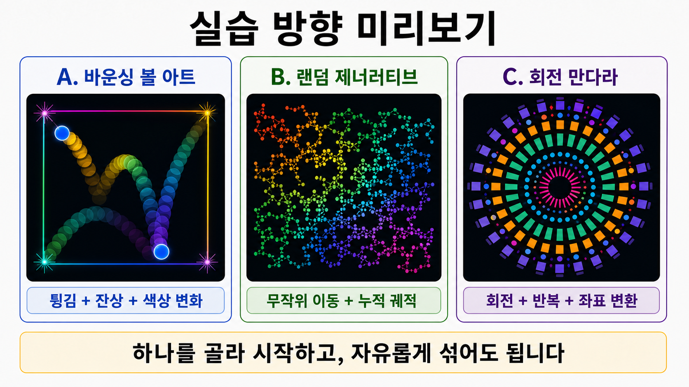

5주차 3교시 — 학생 주도 실습: 인터랙티브 애니메이션
강의 아웃라인: week-05-outline 이전 교시: week-05-period2-student (random, 유틸리티 함수, 좌표 변환) 다음 주차: week-06-outline (함수와 배열)
| 항목 | 내용 |
|---|---|
| 대상 | P5.js 입문자 (테크아트 전공) |
| 소요 시간 | 45분 |
| 사전 준비 | 1교시 변수 움직임·경계 처리, 2교시 random·map·좌표 변환 |
| 결과물 | 인터랙티브 애니메이션 스케치 1점 (실습과제 2 기초) |
- 1·2교시의 변수 갱신·
random()·map()·좌표 변환·인터랙션을 결합해 인터랙티브 애니메이션을 제작합니다 - 실습과제 2의 기초를 완성하고, 과제로 발전시킵니다
- 4주차 인터랙션과 5주차 움직임을 통합해 자기만의 스타일이 드러나는 작품을 만듭니다
완성 기준 안내 + 실습 시작
3교시에서는 직접 인터랙티브 애니메이션을 만듭니다. 세 단계 완성 기준을 보고, 자신이 어느 단계에 있는지 스스로 판단할 수 있습니다.
완성 기준
| 단계 | 이름 | 완성 기준 | 핵심 |
|---|---|---|---|
| 기본 | 움직이는 스케치 | 도형이 자동으로 움직임 + 경계 처리 + 마우스 또는 키보드 인터랙션 1개 | “움직이고, 부딪히고, 반응한다” |
| 표준 | 화려한 스케치 | 기본 + random() 또는 map() 활용 + 시각
효과 1개 이상 (색상 변화, 잔상, 크기 변화 중 택1) |
“보기에도 좋다” |
| 심화 | 완성된 작품 | 표준 + 복합 효과 조합 (HSB+잔상+map 등) 또는 좌표
변환(translate/rotate) 활용 |
“자기만의 스타일이 있다” |
기본만 달성해도 오늘 목표는 완료입니다. 까지 가면 충분히 훌륭합니다. 자기 속도에 맞게 진행하세요. 이 스케치가 곧 실습과제 2입니다 — 수업 중에 시작하고, 다음 주까지 발전시켜 제출하면 됩니다. 제출하면 만점입니다.
세 가지 방향
세 방향 중 하나를 골라 시작합니다 (자유롭게 섞어도 됩니다).
| 방향 | 설명 | 핵심 기술 |
|---|---|---|
| A. 바운싱 볼 아트 | 바운싱 볼 + 색상/크기 변화 + 잔상 | 변수 갱신, if문 바운싱, random/map |
| B. 랜덤 제너러티브 아트 | random() 워커 + 누적 그리기 |
random(), constrain(), 잔상 |
| C. 회전 만다라 | translate() + rotate() + for문 |
push/pop, rotate, frameCount |

무엇을 골라야 할지 모르겠으면 A(바운싱 볼)부터 시작하세요. 1교시에서 이미 만들어봤으니 가장 친숙합니다.
환경 설정 + 스타터 코드
- P5.js Web Editor 접속 (로그인 확인)
- File → New → 스케치 이름을
week05-animation으로 변경 - 아래 세 방향 중 하나를 골라 스타터 코드를 복사해 붙여넣기
방향 A: 바운싱 볼 아트
// === 상태 변수 (draw() 밖에 선언) ===
let x, y;
let speedX, speedY;
// === setup(): 한 번 실행 ===
function setup() {
createCanvas(400, 400);
x = width / 2;
y = height / 2;
speedX = 3;
speedY = 2;
}
// === draw(): 매 프레임 실행 (1초에 약 60번) ===
function draw() {
background(220);
// 도형 그리기
fill(100, 150, 255);
noStroke();
ellipse(x, y, 50, 50);
// 위치 갱신
x += speedX;
y += speedY;
// 바운싱
if (x > width || x < 0) {
speedX *= -1;
}
if (y > height || y < 0) {
speedY *= -1;
}
}
// === mousePressed(): 클릭 시 1회 ===
function mousePressed() {
// 여기에 클릭 이벤트 코드
}
// === keyPressed(): 키 누를 때 1회 ===
function keyPressed() {
// 여기에 키보드 이벤트 코드
}방향 B: 랜덤 제너러티브 아트
let x, y;
function setup() {
createCanvas(400, 400);
background(255);
x = width / 2;
y = height / 2;
}
function draw() {
// 랜덤 이동
x += random(-3, 3);
y += random(-3, 3);
// 화면 안에 유지
x = constrain(x, 0, width);
y = constrain(y, 0, height);
// 도형 그리기
noStroke();
fill(0, 100);
ellipse(x, y, 10, 10);
}
function mousePressed() {
// 여기에 클릭 이벤트 코드
}
function keyPressed() {
// 여기에 키보드 이벤트 코드
}방향 C: 회전 만다라
function setup() {
createCanvas(400, 400);
angleMode(DEGREES);
}
function draw() {
background(220);
translate(width / 2, height / 2);
rotate(frameCount);
// 회전하는 사각형
fill(100, 150, 255);
noStroke();
rect(-25, -25, 50, 50);
}
function mousePressed() {
// 여기에 클릭 이벤트 코드
}
function keyPressed() {
// 여기에 키보드 이벤트 코드
}실행 버튼()을 눌러보세요. A는 공이 튕기고, B는 점이 돌아다니고, C는 사각형이 회전합니다. 여기서부터 시작합니다.
단계 1 — 기본: “움직이고, 부딪히고, 반응한다”
이 단계가 끝나면: 도형이 자동으로 움직이고, 화면 밖으로 나가지 않으며, 마우스 또는 키보드에 반응한다.
스타터 코드가 실행되면 인터랙션을 추가해보세요. 1교시에서 배운 움직임 + 인터랙션 결합입니다.
방향 A: 바운싱 볼 — 클릭으로 속도 변경 + 키보드 초기화
스타터 코드의 mousePressed()와
keyPressed()를 채웁니다.
function mousePressed() {
// 클릭하면 속도 랜덤 변경
speedX = random(1, 8);
speedY = random(1, 8);
// 50% 확률로 음수 방향
if (random(1) > 0.5) speedX *= -1;
if (random(1) > 0.5) speedY *= -1;
}
function keyPressed() {
if (key === 'r') {
// r키: 중앙으로 초기화
x = width / 2;
y = height / 2;
speedX = 3;
speedY = 2;
}
}이제 클릭하면 속도가 랜덤으로 바뀌고, r을 누르면 처음
상태로 돌아옵니다.
방향 B: 랜덤 워커 — 클릭으로 위치 이동 + 캔버스 초기화
function mousePressed() {
// 클릭한 위치로 워커 이동
x = mouseX;
y = mouseY;
}
function keyPressed() {
if (key === 'c') {
background(255); // 캔버스 초기화
}
if (key === 'r') {
x = width / 2; // 중앙으로 초기화
y = height / 2;
}
}클릭하면 워커가 그 위치로 순간이동합니다. c로 캔버스를
지우고 새로 시작할 수 있습니다.
방향 C: 회전 만다라 — 클릭으로 회전 속도 변경
draw() 밖에 변수를 추가하고, 스타터 코드를
수정합니다.
let rotSpeed = 1; // draw() 밖에 추가
function draw() {
background(220);
translate(width / 2, height / 2);
rotate(frameCount * rotSpeed); // frameCount → frameCount * rotSpeed
fill(100, 150, 255);
noStroke();
rect(-25, -25, 50, 50);
}
function mousePressed() {
rotSpeed *= -1; // 클릭하면 회전 방향 반전!
}
function keyPressed() {
if (keyCode === UP_ARROW) {
rotSpeed += 0.5; // 빠르게
} else if (keyCode === DOWN_ARROW) {
rotSpeed -= 0.5; // 느리게
}
}클릭하면 회전 방향이 반대로 바뀝니다. 방향키로 속도도 조절할 수 있습니다.
여기까지 하면 기본 달성 — “움직이고, 부딪히고, 반응한다”
단계 2 — 표준: “보기에도 좋다”
이 단계가 끝나면:
random()또는map()을 활용하고, 시각 효과(색상, 잔상, 크기 변화)를 1개 이상 추가하여 보기 좋은 스케치를 만든다.
이 됐으면, 시각적으로 화려하게 만들어보세요. 2교시에서 배운 함수들을 활용할 차례입니다.
아이디어 1: HSB 무지개 색상 순환
// setup()에 추가
colorMode(HSB, 360, 100, 100);
// draw()에서 fill을 이렇게 변경
fill(frameCount % 360, 80, 100);시간에 따라 색상이 빨강→주황→노랑→…→보라로 순환합니다. 한 줄이면 무지개 효과!
아이디어 2: 잔상 효과
// draw() 맨 위의 background()를 교체
// HSB 모드일 때:
background(0, 0, 10, 30); // 반투명 어두운 배경 → 잔상 효과
// RGB 모드일 때:
// background(220, 220, 220, 30);네 번째 값(30)이 투명도입니다. 낮을수록 잔상이 오래 남습니다.
아이디어 3: map()으로 위치에 따른 크기 변화
// 방향 A: 바운싱 볼의 크기가 위치에 따라 변화
let size = map(y, 0, height, 20, 80);
ellipse(x, y, size, size);위에 있으면 작고 아래에 있으면 큽니다. 원근감 느낌이 납니다.
아이디어 4: 벽에 부딪힐 때 색상 변경
// 방향 A: 바운싱할 때 색 변경
if (x > width || x < 0) {
speedX *= -1;
ballColor = color(random(255), random(255), random(255)); // 부딪히면 색 변경!
}ballColor를 쓰려면 draw() 밖에
let ballColor;를 추가하고, setup()에서
ballColor = color(100, 150, 255);로 초기화하세요.
draw()에서는 fill(ballColor);로 씁니다.
아이디어 5: 랜덤 워커 위치 → 색상 매핑
// 방향 B: x좌표에 따라 색상이 변화하는 궤적
// setup()에 colorMode(HSB, 360, 100, 100, 255); 추가
let hue = map(x, 0, width, 0, 360);
fill(hue, 80, 100, 150);map()으로 x좌표를 색상에 연결했습니다. 왼쪽은 빨강,
오른쪽은 보라. 궤적이 쌓이면서 색상이 섞인 아트워크가 됩니다.
아이디어 6: 회전 만다라 for문 확장
// 방향 C: for문으로 도형을 원형 배치
// setup()에 colorMode(HSB, 360, 100, 100); 추가
function draw() {
background(0, 0, 10);
translate(width / 2, height / 2);
for (let i = 0; i < 8; i++) {
push();
rotate(frameCount * rotSpeed + i * 45); // 45도 간격
fill(i * 45, 80, 100);
rect(60, -10, 40, 20);
pop();
}
}for문으로 8개 도형을 45도 간격으로 배치하면 만다라
느낌이 납니다. 3주차 for문 + 2교시 좌표 변환의 조합!
여기까지 하면 표준 달성 — “보기에도 좋다”
단계 3 — 심화: “자기만의 스타일이 있다”
이 단계가 끝나면: 여러 효과를 복합적으로 조합하거나, 좌표 변환을 활용하여 자기만의 개성이 드러나는 작품을 완성한다.
기본 기능이 완성되고 시각적으로도 안정적이면, 조합하고 확장해보세요. 여러 아이디어를 섞으면 자기만의 작품이 됩니다.
조합 예시 1: 바운싱 + 잔상 + 무지개 + 크기 변화
let x, y;
let speedX, speedY;
let ballSize = 50;
function setup() {
createCanvas(400, 400);
colorMode(HSB, 360, 100, 100, 255);
x = width / 2;
y = height / 2;
speedX = 3;
speedY = 2;
}
function draw() {
background(0, 0, 10, 30); // 잔상 효과
// 무지개 색상 + 위치 기반 크기
let hue = frameCount % 360;
let size = map(y, 0, height, 20, 80);
fill(hue, 80, 100);
noStroke();
ellipse(x, y, size, size);
x += speedX;
y += speedY;
if (x > width || x < 0) speedX *= -1;
if (y > height || y < 0) speedY *= -1;
}
function mousePressed() {
speedX = random(1, 8);
speedY = random(1, 8);
if (random(1) > 0.5) speedX *= -1;
if (random(1) > 0.5) speedY *= -1;
}
function keyPressed() {
if (key === 'c') {
background(0, 0, 10);
}
if (keyCode === UP_ARROW) {
ballSize += 5;
} else if (keyCode === DOWN_ARROW) {
ballSize -= 5;
if (ballSize < 10) ballSize = 10;
}
}잔상 + 무지개 + map 크기 변화 + 인터랙션. 오늘 배운 것의 종합입니다.
조합 예시 2: 랜덤 워커 + 위치 기반 색상 + 크기 + 잔상
let x, y;
function setup() {
createCanvas(400, 400);
colorMode(HSB, 360, 100, 100, 255);
background(0, 0, 100);
x = width / 2;
y = height / 2;
}
function draw() {
x += random(-4, 4);
y += random(-4, 4);
x = constrain(x, 0, width);
y = constrain(y, 0, height);
// x → 색상, y → 크기
let hue = map(x, 0, width, 0, 360);
let size = map(y, 0, height, 3, 15);
noStroke();
fill(hue, 80, 100, 150);
ellipse(x, y, size, size);
}
function mousePressed() {
x = mouseX;
y = mouseY;
}
function keyPressed() {
if (key === 'c') {
background(0, 0, 100);
}
if (key === 'r') {
x = width / 2;
y = height / 2;
}
}map() 두 개로 x좌표 → 색상, y좌표 → 크기. 위치가 곧 시각
정보가 되니 궤적이 아트워크가 됩니다.
조합 예시 3: 회전 만다라 + for문 + 마우스 제어
let numShapes = 8;
let rotSpeed = 1;
function setup() {
createCanvas(400, 400);
angleMode(DEGREES);
colorMode(HSB, 360, 100, 100);
}
function draw() {
background(0, 0, 10);
translate(width / 2, height / 2);
let spacing = 360 / numShapes;
for (let i = 0; i < numShapes; i++) {
push();
rotate(frameCount * rotSpeed + i * spacing);
fill(i * spacing, 80, 100);
noStroke();
rect(60, -10, 40, 20);
pop();
}
// 마우스 거리에 따라 중심 원 크기 변화
let d = dist(mouseX, mouseY, width / 2, height / 2);
let centerSize = map(d, 0, 300, 80, 10);
centerSize = constrain(centerSize, 10, 80);
fill(0, 0, 100);
ellipse(0, 0, centerSize, centerSize);
}
function mousePressed() {
numShapes += 2;
if (numShapes > 24) numShapes = 4;
}
function keyPressed() {
if (keyCode === UP_ARROW) {
rotSpeed += 0.5;
} else if (keyCode === DOWN_ARROW) {
rotSpeed -= 0.5;
if (rotSpeed < 0.1) rotSpeed = 0.1;
}
}클릭으로 도형 수 변경, 방향키로 회전 속도 조절, 마우스 위치로 중심 원
크기 변경. map() + constrain() +
dist() + push()/pop()이 모두 들어
있습니다.
여기까지 하면 심화 달성 — “자기만의 스타일이 있다”
단계 4 — 확장 (선택, 남는 시간)
까지 했다면, 더 도전해볼 수 있는 것들입니다.
확장 A: 바운싱 볼 여러 개
배열은 아직 안 배웠지만, 변수를 복붙하면 여러 개 만들 수 있습니다.
let x1 = 100, y1 = 100, sx1 = 3, sy1 = 2;
let x2 = 300, y2 = 200, sx2 = -2, sy2 = 4;
let x3 = 150, y3 = 300, sx3 = 4, sy3 = -3;
function setup() {
createCanvas(400, 400);
colorMode(HSB, 360, 100, 100, 255);
}
function draw() {
background(0, 0, 10, 30);
// 볼 1: 빨강
fill(0, 80, 100);
ellipse(x1, y1, 30, 30);
x1 += sx1; y1 += sy1;
if (x1 > width || x1 < 0) sx1 *= -1;
if (y1 > height || y1 < 0) sy1 *= -1;
// 볼 2: 초록
fill(120, 80, 100);
ellipse(x2, y2, 30, 30);
x2 += sx2; y2 += sy2;
if (x2 > width || x2 < 0) sx2 *= -1;
if (y2 > height || y2 < 0) sy2 *= -1;
// 볼 3: 파랑
fill(240, 80, 100);
ellipse(x3, y3, 30, 30);
x3 += sx3; y3 += sy3;
if (x3 > width || x3 < 0) sx3 *= -1;
if (y3 > height || y3 < 0) sy3 *= -1;
}코드가 반복됩니다. 6주차에서 배열을 배우면 같은 구조를 훨씬 짧고 정리된 코드로 만들 수 있습니다.
확장 B: 이중 회전 만다라
function draw() {
background(0, 0, 10);
translate(width / 2, height / 2);
for (let i = 0; i < 12; i++) {
push();
rotate(frameCount * 0.5 + i * 30);
fill(i * 30, 80, 100);
ellipse(80, 0, 20, 20); // 바깥 원
rotate(frameCount * -0.3); // 역회전!
rect(120, -5, 30, 10); // 더 바깥 사각형
pop();
}
}이중 회전입니다. 큰 회전 안에 작은 역회전. 복잡해 보이지만
push()/pop() 패턴만 잘 쓰면 됩니다.
확장 C: 속도 기반 선 굵기
// draw() 안 — 방향 B에서 활용
let speed = dist(x, y, x + random(-3, 3), y + random(-3, 3));
let weight = map(speed, 0, 5, 1, 8);
strokeWeight(weight);
stroke(hue, 80, 100, 150);
point(x, y);빠르게 움직일수록 두꺼운 점. 궤적에 리듬감이 생깁니다.
마무리
스케치 저장 확인
지금 바로 Ctrl+S (Mac은 Cmd+S)로 저장하세요. 이 스케치가 실습과제 2입니다.
실습과제 2 제출 요건
| 항목 | 내용 |
|---|---|
| 과제명 | 인터랙티브 애니메이션 |
| 제출 기한 | 6주차 수업 전까지 |
| 제출 방식 | P5.js Web Editor 링크 공유 |
| 평가 | 제출 완료 시 만점 |
완성도를 보는 게 아니라, 직접 시도하고 제출하는 것이 중요합니다.
필수 요구사항 최종 확인
| # | 요구사항 | 확인 |
|---|---|---|
| 1 | 변수를 매 프레임 갱신하여 움직임 구현 | |
| 2 | 화면 경계 처리 (바운싱/래핑/constrain) | |
| 3 | random() 또는 map() 1개
이상 활용 |
|
| 4 | 마우스 또는 키보드 인터랙션 1개 이상 |
이상이면 자동으로 다 만족합니다. 다음 주까지 더 발전시켜 제출해도 좋습니다.
완성 기준 최종 확인
| 단계 | 완성 기준 | 체크 |
|---|---|---|
| 기본 | 움직이고 + 부딪히고 + 반응한다 | |
| 표준 | random/map + 시각 효과 → 보기에도 좋다 | |
| 심화 | 복합 효과 + 자기만의 스타일 |
오늘 배운 것 3줄 정리
- 변수 갱신 = 움직임:
x += speed한 줄이 Casey Reas의 수천 개 에이전트의 원리 - random/map/constrain = 풍부한 표현: 규칙적인 움직임에 변화를 더하는 도구들
- 인터랙션 + 움직임 = 인터랙티브 작품: 4주차 + 5주차를 합치면 사용자가 개입하는 살아있는 작품
6주차 예고
오늘 바운싱 볼을 1개 만들었는데, 100개 만들고 싶으면 변수 200개를 선언해야 할까요? 아닙니다. 6주차에서 함수로 코드를 정리하고, 배열로 같은 종류의 데이터를 한 번에 관리하는 법을 배웁니다. 배열을 쓰면 많은 볼도 훨씬 짧고 읽기 쉬운 코드로 만들 수 있습니다.
(선택) 사전 학습 영상
미리 보면 다음 주가 더 쉬워집니다.
| 영상 | 내용 | 시간 |
|---|---|---|
| The Coding Train “3.4 Random” | random() 함수 복습 | 약 10분 |
| The Coding Train “9.1 Transformations Pt.1” | translate, rotate, push/pop 복습 | 약 22분 |